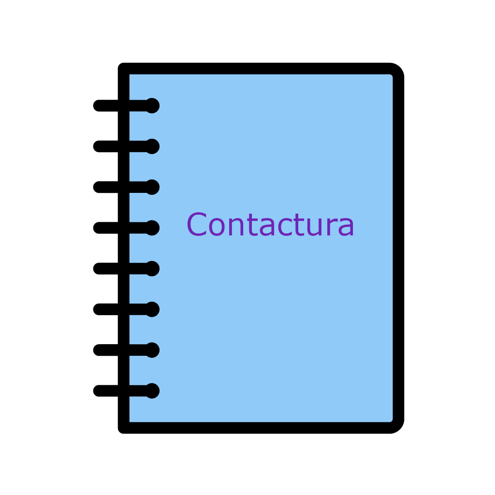

<nav class="navbar">
    <!--menu responsivo mobile-->
    <span id="menu-mobile" class="navbar-toggle">
        <mat-icon>menu</mat-icon>
     </span>
    
    <!--menu para desktop-->
    <span class="logo"></span>

    <ul id="menu-desktop" class="main-nav">
        <li>
            <a [routerLink]="['/lista-contatos']" routerLinkActive="active" class="nav-links">Contatos</a>
        </li>
        
        <li>
            <a [routerLink]="['/lista-usuarios']" routerLinkActive="active" class="nav-links">Usuarios</a>
        </li>

        <li>
            <a class="nav-links logout" (click)="logout()">Logout</a>
        </li>
    </ul>
</nav>
